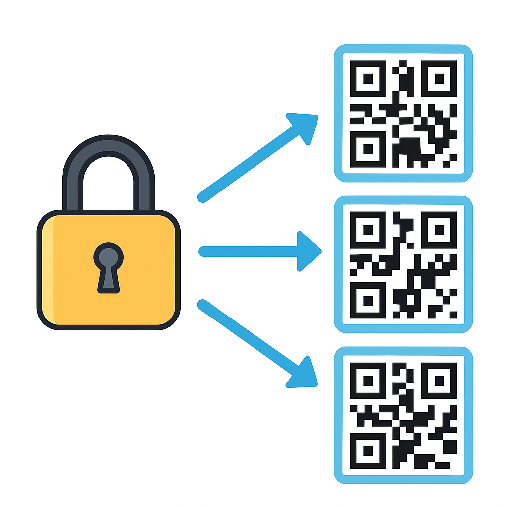
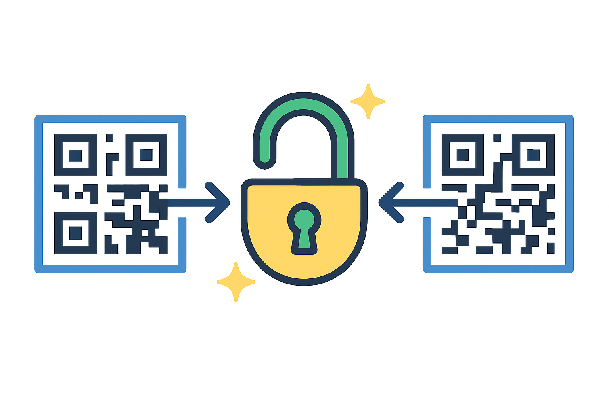
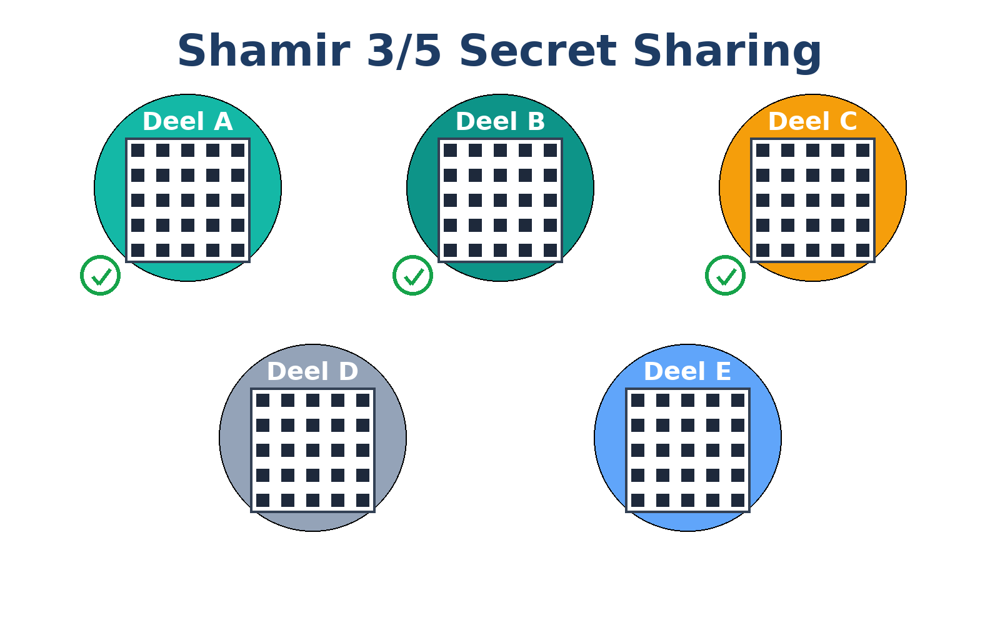

Securely split and combine secrets with QR codes
Table of contents
What is QR SafeShare?
QR SafeShare is a free and open source tool to split a password, recovery phrase, or any text into multiple QR codes using mathematical techniques (XOR and Shamir’s Secret Sharing). A single share has no value; only by combining the right shares is the original secret reconstructed. Everything happens fully locally in your browser — nothing is sent or stored online.
Key features
- Split secrets into QR codes: works with passwords, recovery phrases, or any text.
- Recover easily: scan or upload the required QR codes to restore the original secret.
- Runs locally: all encryption and splitting happens in your browser. Nothing is sent or stored online.
- 3D-print export: create durable, physical backups of your QR codes with 3MF files.
- Extra protection: use the lockable QR SafeShare Sleeve (available on Printables) to prevent unwanted scanning.
Use cases
Here are some practical scenarios where QR SafeShare makes sense:
1. Protecting a crypto recovery phrase
Recovery phrases are extremely sensitive. A CryptoSteel is durable, but if a burglar finds it, they have your entire phrase. Digital backups can be corrupted or hacked. Splitting a metal backup in two also isn’t secure, since each half exposes part of your phrase and you no longer know the whole thing yourself.
With QR SafeShare you can use Shamir’s Secret Sharing (3-2) to create three QR codes where any two are enough to recover your phrase. Export them as 3MF files to 3D-print durable offline backups. Store one in a safe, one digitally, and one with a trusted person. Even if one code is lost or stolen, your funds remain secure. A single QR is useless on its own, even against future quantum computers.
2. Sending a password securely to a client
Sending a password over a single channel like email is risky. If intercepted, the secret is exposed. With XOR 2-2 splitting you divide the password into two QR codes. Each part on its own is useless.
You can send one part via WhatsApp or SMS as a special link that opens the Combine page with the first QR preloaded. The second QR is sent as an image by email. When your client opens the link and scans the second QR, the password is reconstructed locally in their browser. If one channel is compromised, nothing is revealed.
3. Dead man’s switch for a password vault
A dead man’s switch is a system that checks if you are still alive or active. It sends you periodic messages, and if you stop responding it automatically triggers an action, such as sending an email.
If you simply email a password, it can sit unprotected in someone’s inbox and be intercepted. That creates a single point of failure.
With XOR 2-2, you split the vault password in two parts. One QR code is stored on a USB stick together with the vault. The dead man’s switch sends the second part as a special link to a family member who should receive access to the vault. Only by combining the USB QR and the emailed link locally in the browser can the password be reconstructed. A hacker with the email or a burglar with the USB alone gains nothing.
How does splitting work?
You enter your secret (for example a password or recovery phrase). The tool uses mathematical calculations to create multiple shares. Each share is shown as a QR code and can be stored or shared separately.
How does combining work?
Use your camera or upload to scan the QR codes. As soon as enough shares are present, the original secret is reconstructed automatically. Reconstruction happens fully locally in the browser.
3D-printable QR codes
With QR SafeShare you can not only store your secret QR codes digitally, but also export them as a 3MF file. This format is directly supported by most 3D printers and lets you create a durable, physical backup of your secret.
Why is this useful? Paper can tear, fade, or burn. Digital storage can be hacked, corrupted, or lost. A 3D-printed QR is durable, tangible, and completely offline — a secure backup you can actually hold in your hands.
Protective Sleeve
Want to prevent someone from scanning your printed QR code without permission? Use the QR SafeShare Sleeve. Slide the QR code inside and secure it with a padlock. With the lock in place, the QR cannot be removed or scanned.
Install as an App (PWA)
QR SafeShare can also be installed as a Progressive Web App (PWA) for quick access, just like a native app. Once installed, it runs fullscreen and can be used completely offline.
- On Android (Chrome / Edge / Brave): open qrsafeshare.com, tap the ⋮ menu, and choose “Add to Home screen”.
- On iOS (Safari): open qrsafeshare.com, tap the Share button, and select “Add to Home Screen”.
- On Desktop (Chrome / Edge / Brave): open qrsafeshare.com, click the install icon in the address bar or go to ⋮ → Install app.
For the technically inclined
QR SafeShare supports two mathematical methods:
- XOR: the secret is combined with random data. A single share contains no information. Two shares are required to get the secret back.
- Shamir’s Secret Sharing: a well-known cryptographic method where the secret is embedded in a polynomial. You can configure how many shares are required to reconstruct the secret.
Both methods are mathematically secure as long as you follow the rules. Everything runs client-side in your browser with JavaScript.
Shamir’s Secret Sharing explained
With Shamir’s method, the secret is embedded in a polynomial. You can configure how many QR codes (shares) are required to reconstruct the secret. This allows flexible schemes such as 2-out-of-3, where you can lose one QR but still recover your backup.
Storing QR codes on a Linux server
On Linux you can use the qrencode tool to generate QR codes directly from a text file.
This allows you to keep your QR code data safely on your own system, without ever relying on an external website or service.
- Prepare a text file with your QR payload (for example
mytext.txt). - Generate a QR code and store it as terminal output:
qrencode -t ANSIUTF8 < mytext.txt > qr_payload.txt
- Display the QR code in your terminal:
cat qr_payload.txt
This method keeps the entire process on your Linux server, giving you full control over your backups while ensuring that nothing ever leaves your secure environment.
Frequently Asked Questions
Can someone do anything with a single QR code?
No. Each QR code on its own is useless. The secret can only be reconstructed when the required number of QR codes is combined. Even with a supercomputer or a future quantum computer, a single part reveals nothing.
What happens if I lose one of the QR codes?
If you use Shamir’s Secret Sharing, you can create multiple codes (for example 3) but only need a subset (for example 2) to recover the secret. This gives you flexibility and resilience against loss. With XOR 2-2, losing one part means the secret is unrecoverable, so store both parts carefully.
Is QR SafeShare free?
Yes. It is completely free and open source. All processing happens locally in your browser, with no tracking or data collection. If you find it useful, you can support the project through donate.qrsafeshare.com, where you’ll find several donation options.
Why 3D-print QR codes instead of using paper?
Paper can burn, fade, or deteriorate over time. A 3D-printed QR code is durable, physical, and offline. It offers a long-term backup option for sensitive information.
Can I store the QR codes digitally?
Yes, you can. But digital storage (cloud, email, devices) is more vulnerable to hacks or accidental deletion. The advantage of splitting is that a single file is meaningless without the others.
Is this suitable for crypto recovery phrases?
Yes. QR SafeShare is designed with recovery phrases in mind. You can split your seed phrase into multiple parts and keep them in different locations, ensuring safety even if one part is lost or stolen.
Can I use QR SafeShare offline?
Yes. The tool runs entirely in your browser and does not require an internet connection after loading. You can even self-host it from the GitHub source if desired.
QR SafeShare can also be installed as a Progressive Web App (PWA) for quick access, just like a native app:
- On Android (Chrome / Edge / Brave): open qrsafeshare.com, tap the ⋮ menu, and choose “Add to Home screen”.
- On iOS (Safari): open qrsafeshare.com, tap the Share button, and select “Add to Home Screen”.
- On Desktop (Chrome / Edge / Brave): open qrsafeshare.com, click the install icon in the address bar or go to ⋮ → Install app.
👉 Once installed, QR SafeShare runs fullscreen and can also be used completely offline, since all features run locally in your browser.
Does QR SafeShare support splitting files?
No. QR SafeShare only works with text (passwords, recovery phrases, notes). If you try to split a file, the QR codes would become extremely large and unreadable, which makes this approach impractical.
🚀 Enjoying QR SafeShare?
Your support helps add new features and keep it free & open source.
Thank you for your support 🙏